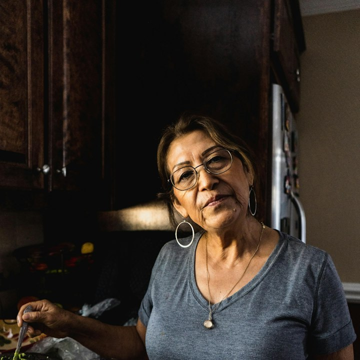

Verified
One less worry for our kids
My parents had been saying “we’ll sort it out later” for years. We went to Serna, they explained everything patiently and we set it up in monthly payments. My mom left calmer than any of us.

Martha G.2 days ago